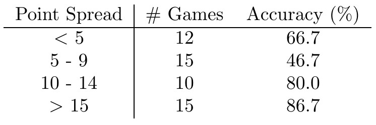

Another pretty good result this week: \(36/52 = 69.2%\). Accuracy by spread is at right.
{kind=link}
A quick note on accuracy as an evaluation metric: We actually predict significant fluctuations in performance of our model from week to week. If we estimate our prediction accuracy at 70%, then for a week with \(n\approx 50\) games we expect a distribution of accuracies from week to week with standard deviation given by the binomial distribution: \(\sigma = \sqrt{n p (1-p)}/n \approx 6.5%\). This is a rather broad distribution - we might expect results ranging from \(60%\) to \(80%\) to be quite common from week to week. For \(n \approx 15\) games (as in each row of our tables comparing by point spread), the standard deviation increases by a factor of \(\approx 2\).
We have a functioning visualization tool for our NBA content, but are still working on loading it up to our server. Expect that, and a post about our difficulties, to show up soon. Our week 6 predictions are now up.
 Dustin got a B.S in Engineering Physics from the Colorado School of Mines (Golden, CO) before moving to UC Santa Barbara for graduate school. There he became interested in Soft Condensed Matter Physics and Polymer Physics, studying the interaction between single DNA molecules and salt ions. After a brief postdoc at UC San Diego studying the physics of bacterial growth, Dustin decided to move into the data science business for good - he is now a Quantitative Analyst at Google in Mountain View.
Dustin got a B.S in Engineering Physics from the Colorado School of Mines (Golden, CO) before moving to UC Santa Barbara for graduate school. There he became interested in Soft Condensed Matter Physics and Polymer Physics, studying the interaction between single DNA molecules and salt ions. After a brief postdoc at UC San Diego studying the physics of bacterial growth, Dustin decided to move into the data science business for good - he is now a Quantitative Analyst at Google in Mountain View.